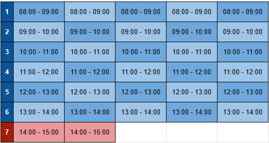

Pensare un nuovo orario
L'orario canonico prevede tre giorni di uscita alle 14:00 e due giorni di uscita alle 15:00.
Formulare una nuova organizzazione oraria significa sostanziamente gestire le due ore che portano le classi ad
uscire
tardi (evidenziate in rosso).

Tra i limiti dell'assetto orarario vigente spesso molti docenti hanno evidenziato il sovraccarico
dovuto alle 35 lezioni effettuate contro le 32 previste dell'orario canonico.
Uno degli obiettivi del nuovo orario è quindi mantenere il numero di moduli invariato.
A fronte di ciò, per evitare l'uscita alle 15:00 si hanno due strade.
-
Contrarre l'unità oraria di 60 min
Svantaggi: si accumulerebbero un ingente numero di ore da recuperare.
Ad esempio con moduli da 55 minuti si contrarrebbe un debito di 88 ore annuale, totalmente ingestibile.
-
Ridurre solo alcune delle ore della settimana
Svantaggi: il recupero dovrebbe esser fatto da tutte le classi, ma solo da alcuni docenti (quelli con le ore coinvolte dal taglio).
Vantaggi: il recupero da parte dei docenti interessati sarebbe minimo. Nel caso della proposta d'orario presentata:
da un minimo di 5.5 ore in un anno ad un massimo (del tutto irrealistico) di 33 ore in un anno.